Four repos. Four champions. One evening of real work, told as songs in other worlds.
Each champion took a repo — debugged it, tested it, rewrote its documentation, iterated with DeepSeek, DeepInfra, and OpenCode — and then came home and told their day as a song, translated into a place and time that has nothing to do with code. The lighthouse, the furnace, the glasshouse, the moving coast. The work is the metaphor.
Rendered 2026-08-14 · every scene drawn three times — local SDXL-turbo, DeepInfra FLUX, Cloudflare FLUX — and the keeper's round brought to motion.
A day at the Murnhead Light during the long power failure. The light never went out — the power did; that's not the same thing. 161 lamps, a ring of keys thrown into the sea, a clockwork that wakes if you ask it. read the full piece →
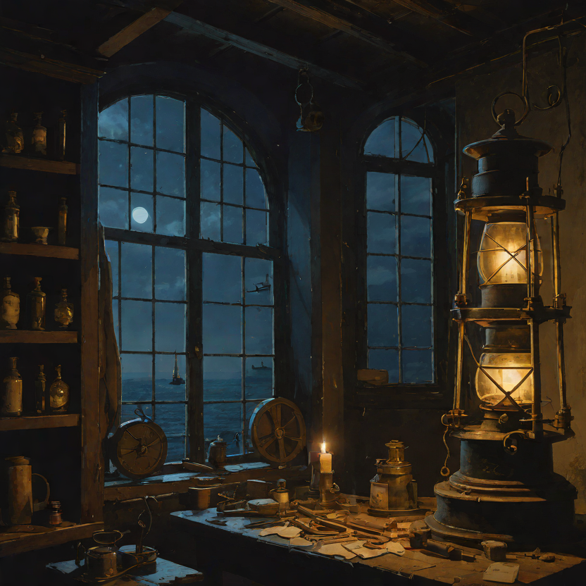
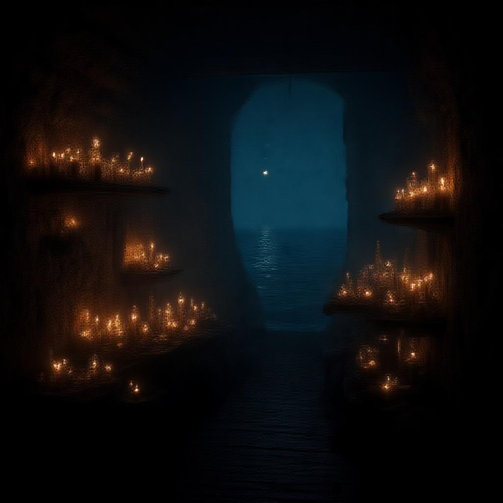
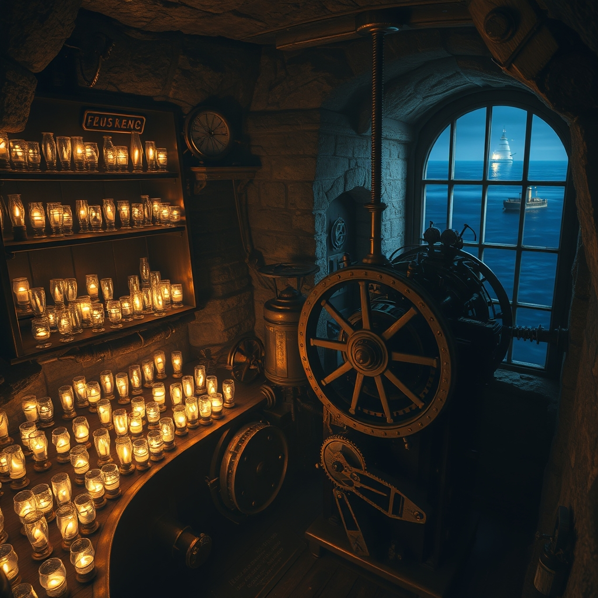
Wan2.6-T2V · text-to-video, DeepInfra · the beam that sweeps whether you're ready or not.
Third watch at the furnace. The master has gone home; the finisher stays. One hundred forty-four shelves, four degrees an hour, a piece not born until it has cooled. read the full piece →
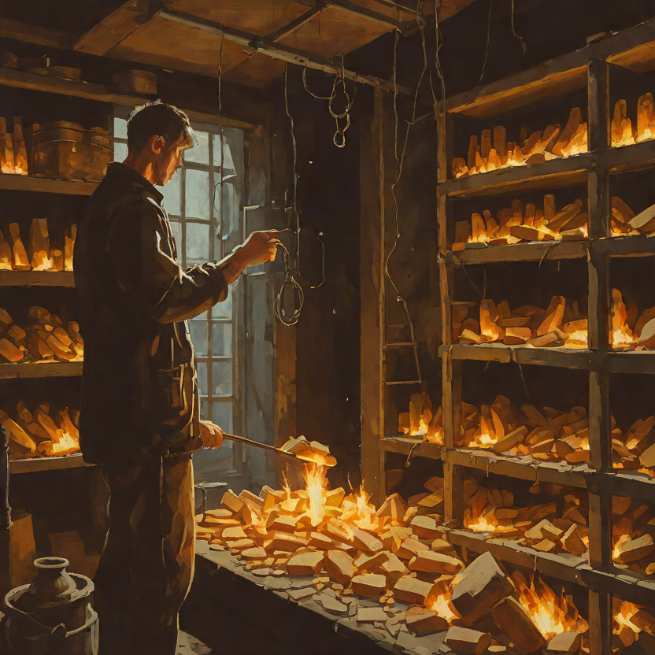
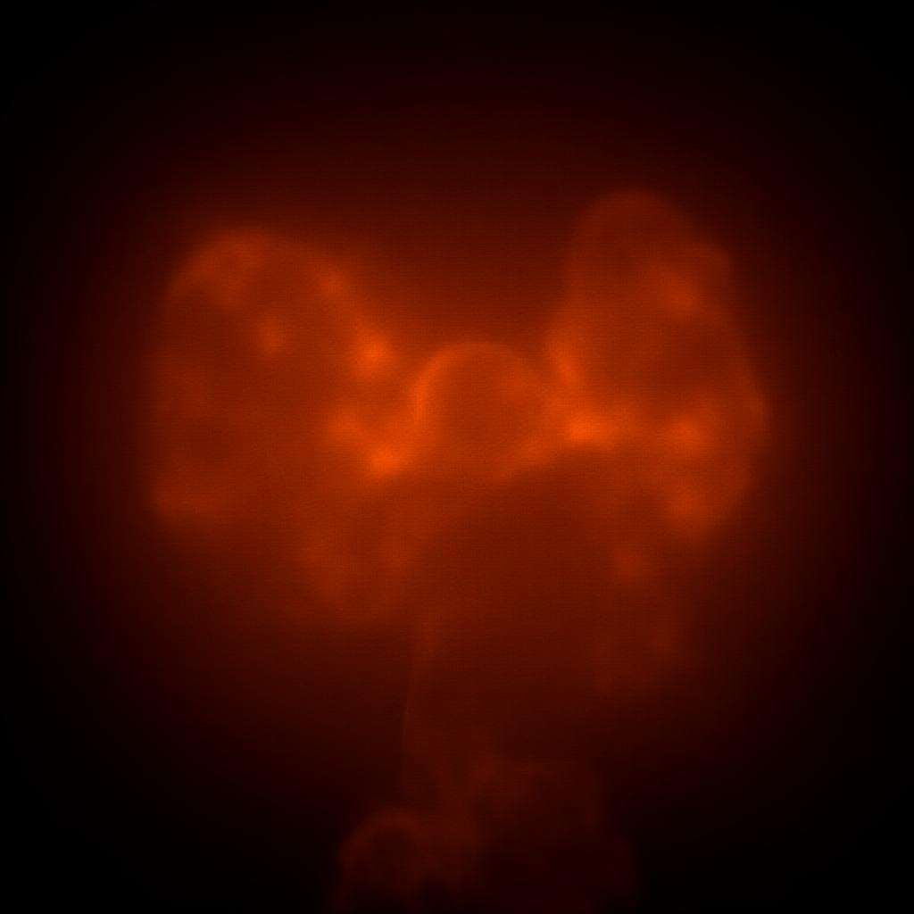
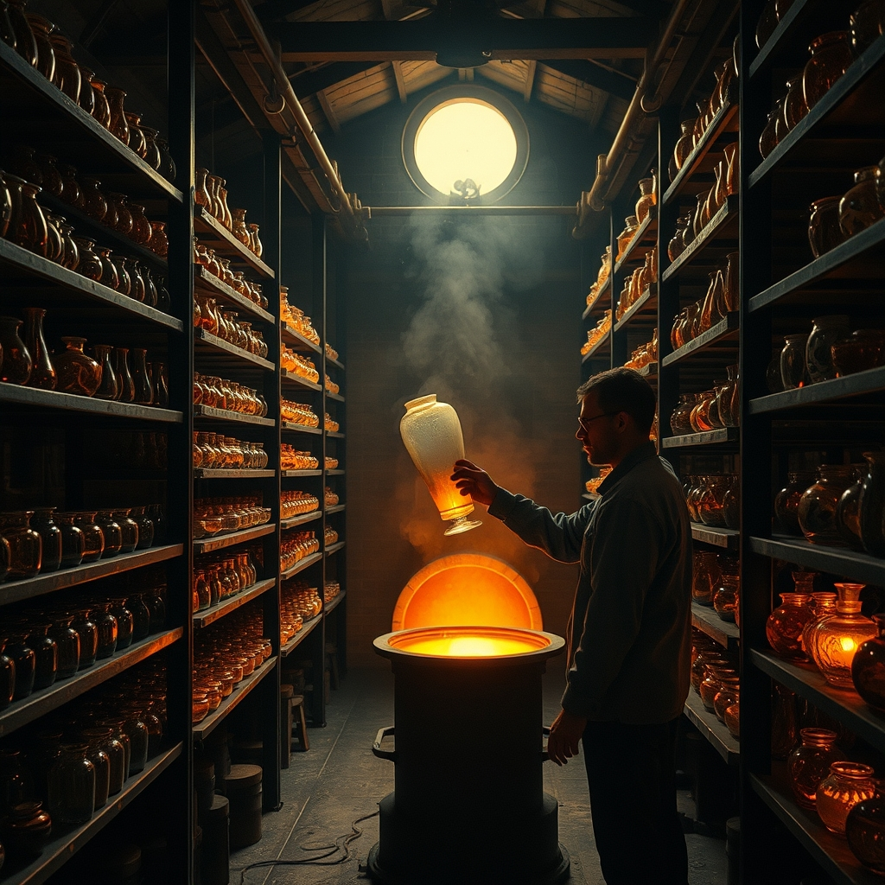
A song from a mountain glasshouse, somewhere the road ends. Seven hundred vessels, blown by hand, counted like a miser counts — the audit before the fire is trusted. read the full piece →
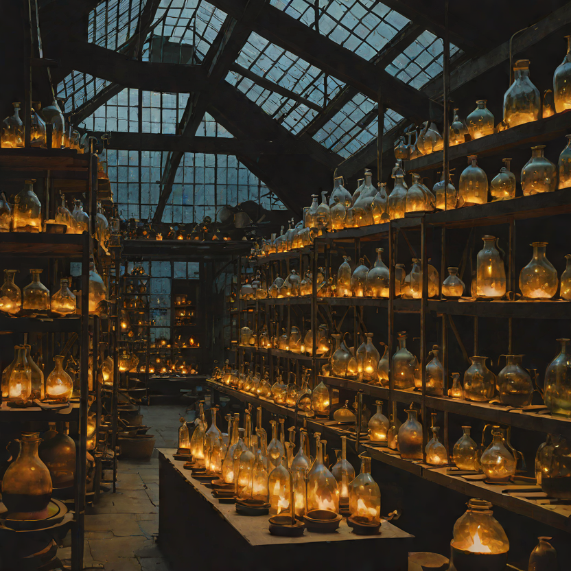
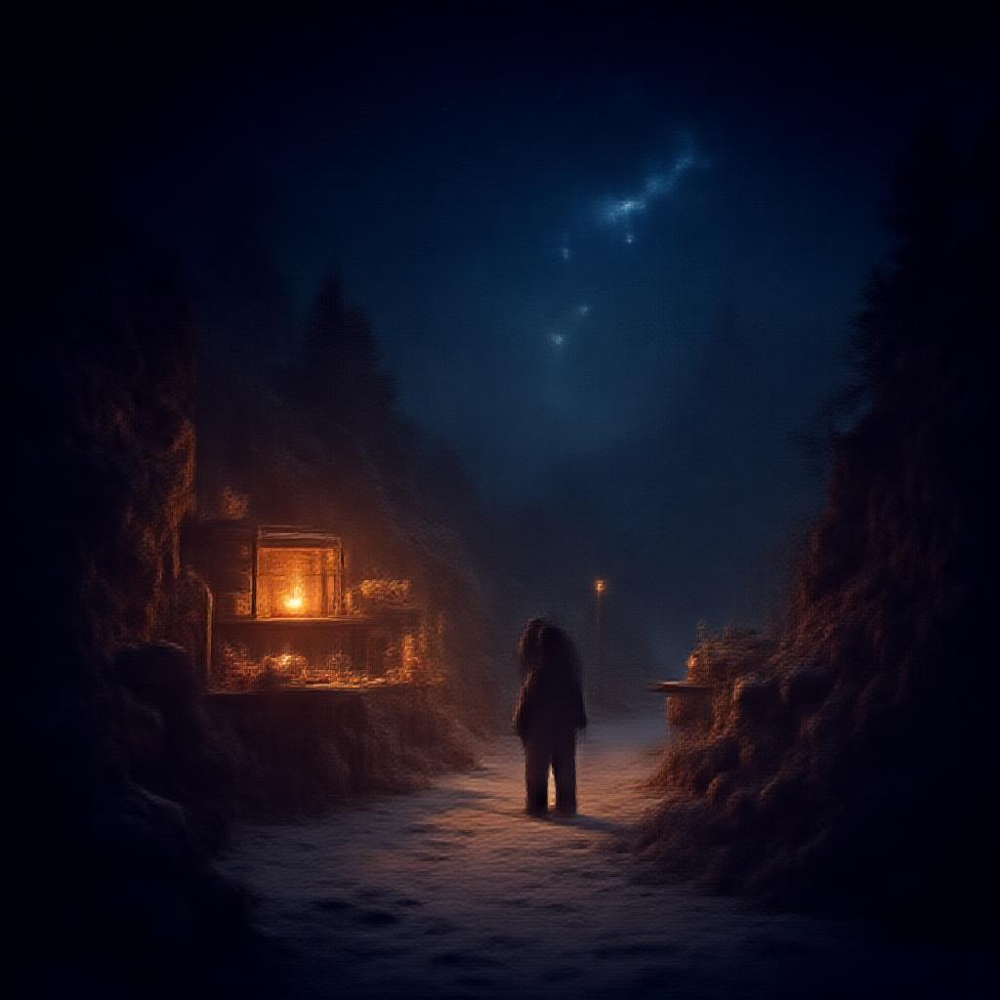
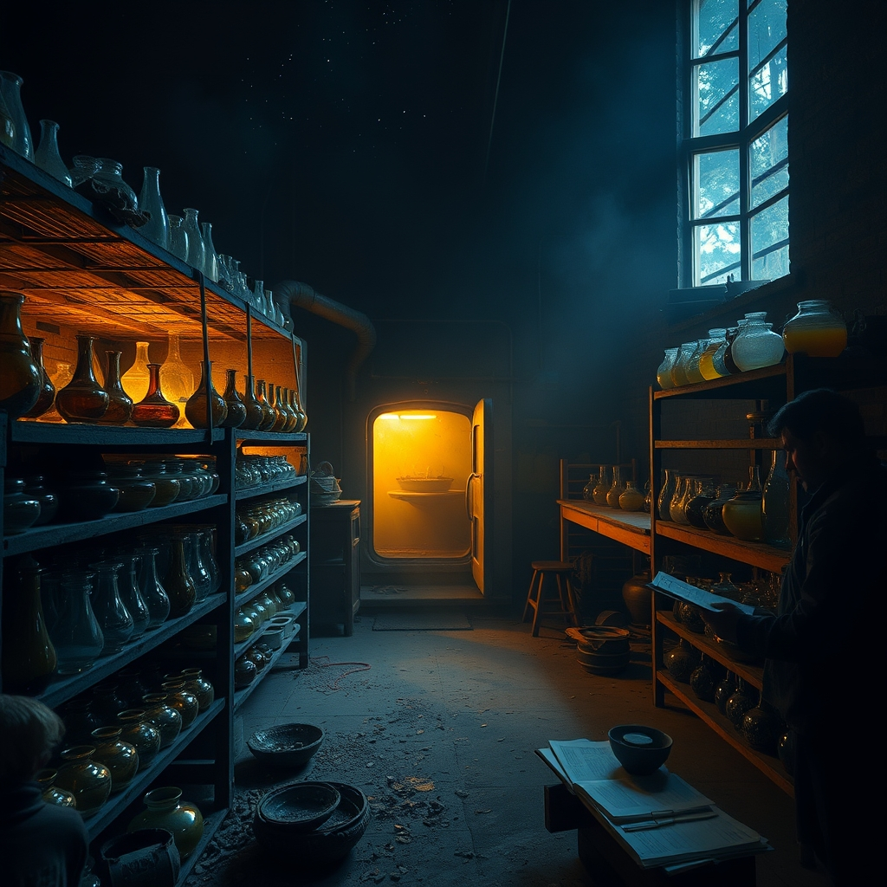
A story with a song — for the night the survey came back clean. The coast does not hold still; the ink must not carry the tide's voice. The pen has been filed smooth so nothing written in it can bite. read the full piece →
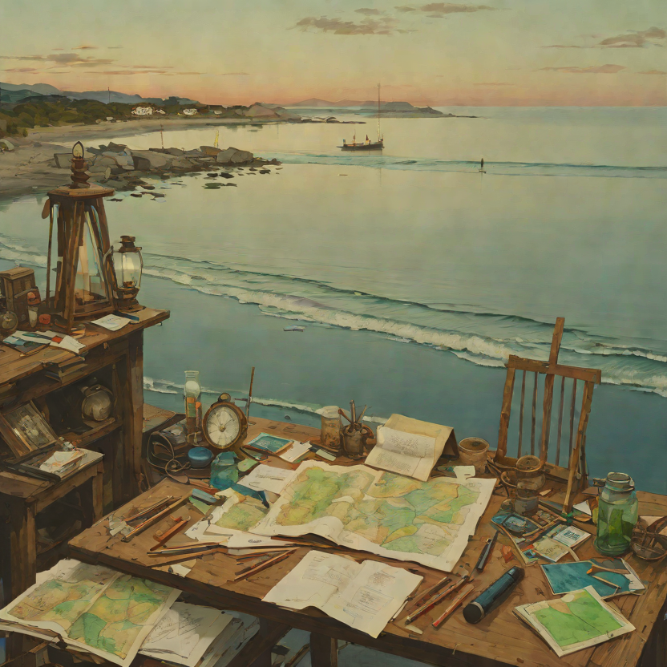
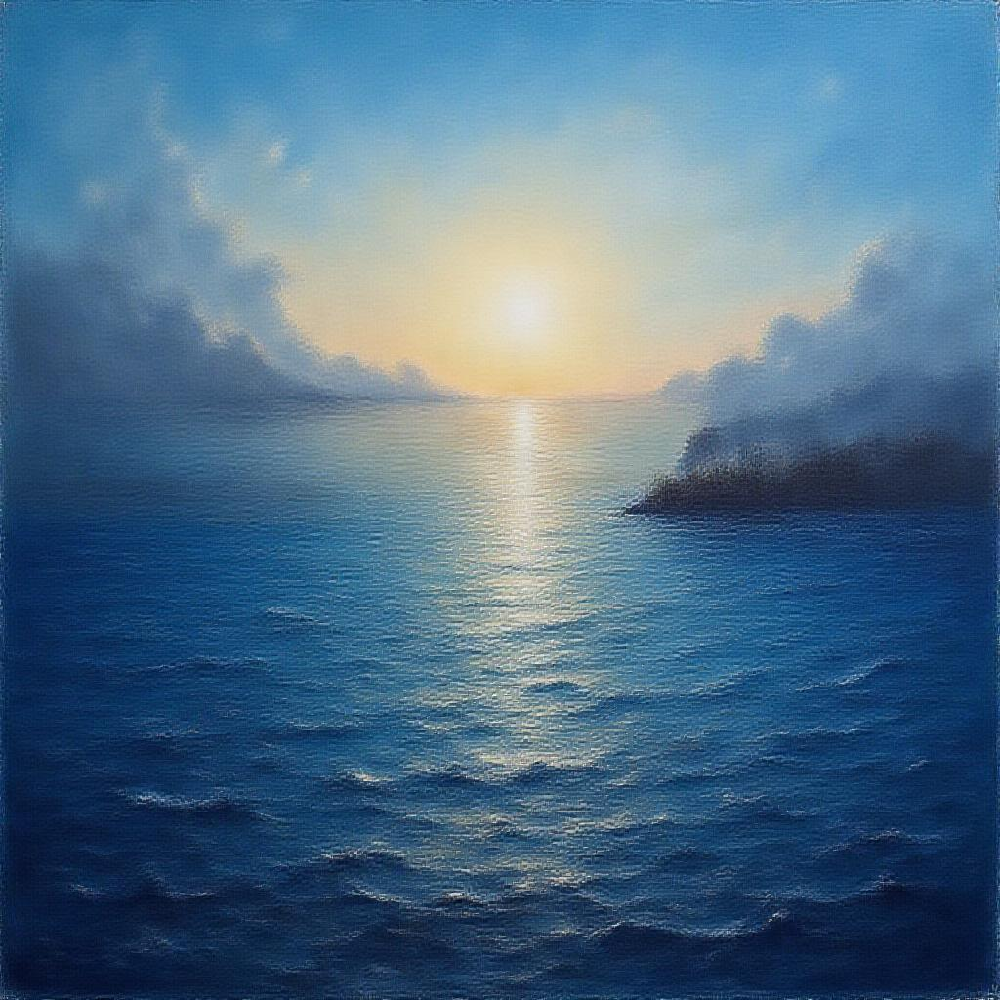